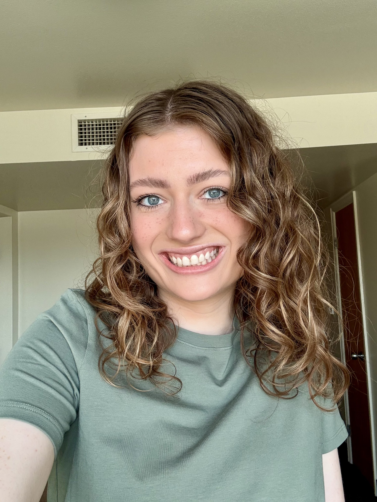

SARIAH CLARK
I am a Brigham Young University student pursuing a business degree with a minor in Healthcare Leadership. I have several years of experience in healthcare, including work as a non-emergency medical transport marketing intern and an outpatient receptionist. Through these roles, I have developed strengths in communication, operations, organization, and supporting patient-centered service.
